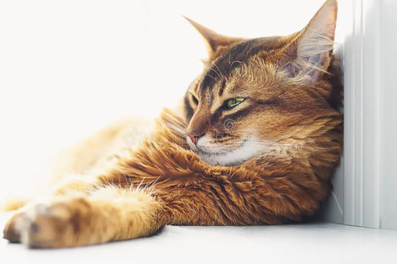

Ma galerie de photos
Survolez une photo avec la souris ou naviguez avec la touche Tab.
Aucune photo sélectionnée
Plage au lever du soleil
Sentier de montagne
Rue de la vieille ville

Chat endormi
Champ de lavande
Pont de nuit